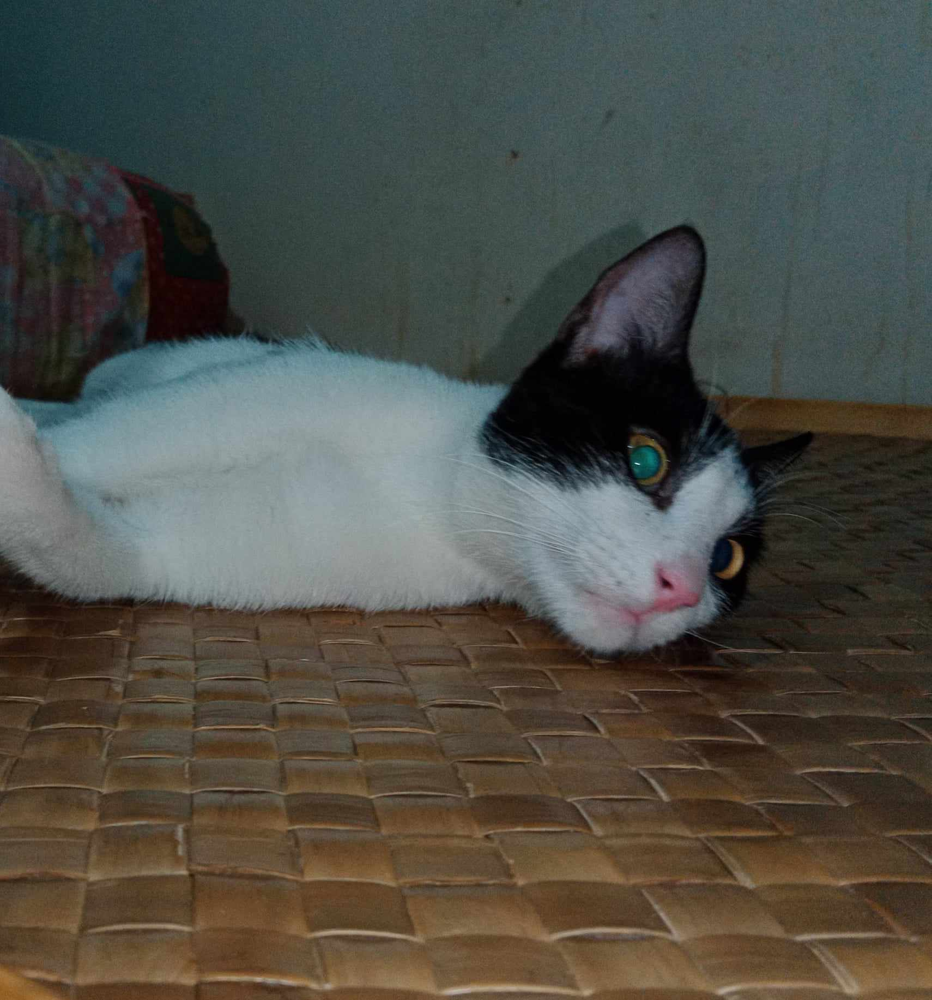

<!DOCTYPE html>
<html></html>
<head>
  <meta charset="UTF-8">
  <meta name="viewport" content="width=device-width, initial-scale=1.0">
  <base href="https://ijmplm.github.io/backup/">
  <title>Activity 1 - Cat Eyes</title>
</head>
<body>
  <h1>Through the Eyes of a Cat</h1>
  <address>
    <a href="quiz2">...back</a><br>
    Written by John Michael M. Iwag<br>
    Cat Owner with a Cat Personality<br>
    E-mail: jmmiwag2023@plm.edu.ph
  </address>
  <p>Nothing stares as intense as <strong>cats</strong> and even for a domestic cat also known as <em>Felis catus,</em> they are still recognized to be <abbr title="Most Excellent Observant Watcher">MEOW</abbr>
    for their keen sense of sight and hearing, and their ability to notice changes in their environment. Cats may also meow to communicate with humans or other cats, expressing their needs, feelings, or opinions.</p>

  <p>But for an observant species, their eyes are easily fooled for their lack
    of self-awareness. When faced against a mirror, the mirrored features of their reflection
    confuses them for example:
  </p>
  <hr>
  <p>This is how the cat looks</p>
  <bdo dir="rtl">This is how the cat looks</bdo>
  <hr>
  <p>The two has the same content but cats lack the ability to comprehend that the two are the same.
  </p>


  <blockquote>
    <p>Life is only a reflection of what we allow ourselves to see and be</p>
    <cite>- Samuel Taylor Coleridge</cite>
  </blockquote>
<br>
  <p>But with that said, cats are not less of what they are for their limitations in comprehending what they see as they are capable of perceiving things that will probably be unnoticeable.</p>

  <ul>
    <lh>Unique Cat Abilities</lh>
    <li>Perceive Ultraviolet (UV) light</li>
    <li>Great night vision</li>
    <li>Observe a wide field of view</li>
    <a href="https://www.inverse.com/science/cats-see-things-humans-cant-veterinarians-reveal-cat-vision">See More</a>
  </ul>


  <dl>
    <dh><h2>Sample Cat Eyes</h2></dh>
    <dt></dt>
    <dd>This is an image of my cat that possesses <a href="https://www.celestialpets.com/the-eyes-of-dragons-and-felines-a-comparison/#:~:text=There%20is%20no%20one%20answer%20to%20this%20question,eyes%20help%20them%20to%20see%20in%20the%20dark.">Dragon-like eyes</a> </dd>
    <dt><object width="100%" height="400" data="CatEyesCloseup.mp4">
      <param name="movie" value="CatEyesCloseup">
      <param name="allowFullScreen" value="true">
    </object></dt>
    <dd>A closeup look at the movements and behaviour of a cat's eyes showing its fierce and observant nature</dd>
  </dl> 
</body>
</html>
